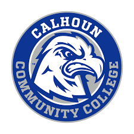

About Me
📖 My Educational Background:
Calhoun Community College
In August 2023-April 2024, I started out going to Calhoun Community College during this year and only took some foundational courses.Western Governors University
From October 2024 till now, I am enrolled in WGU, studying for my Bachelors of Science in Information Technology. Web development is a part of the degree, so I decided why not learn it and make this website at the same time. As of February 5th, I have 2 classes remaining. 
📜 My Certificates:
Codecademy Computer Science Path
In August 2023-November 2023, through Codecademy.com, I studied Computer Science. I learned Python, Git, data structures, trees and graphs, algorithms, databases incorporating SQL, computer architecture, and discrete math. While this isn't on the same level as a computer science degree, this certificate helped me to understand the concepts and use that knowledge within my code.CompTIA A+
In December 2023-Febuary 2024, I studied for and completed the CompTIA A+. I utilized free online course videos from Professor Messer and paid for his course notes and practice exams to prepare for these certificates. I learned hardware, Windows OS, Mac OS, Linux, cloud computing, etc.CompTIA Security+
In March 2024-May 2024, I completed the CompTIA Security+. Like the A+, I used Professor Messer. I learned about laws within tech, firewalls, data protection, cybersecurity practices, etc.SOC Level 1
In June 2024-July 2024, I decided to enroll in TryHackMe.com and learn hands on cybersecurity. Within the SOC Level 1, I learned concepts such as Cyber Defense Frameworks, Cyber Threat Intelligence tools, Network Security and Traffic Analysis like Snort and Wireshark, Endpoint Security Monitoring like Event Logs, SIEM like Splunk, Digital Forensics tools like Autopsy.Jr Penetration Tester
In August 2024-September 2024, I gained valuable insights into ethical hacking practices. Within the Jr Penetration Tester, I learned concepts such as Web Hacking with Burp Suite, Network Security like NMAP, Vulnerability Research, Metasploit, and Privilege Escalation techniques. I enjoyed this certificate the most out of the two from TryHackMe.ITIL v4 Foundations
In October 2024, I earned ITIL v4 Foundations certificate. I learned the ITIL terminology and IT Service Management. I utilized Jason Dion's course and practice exams in preparation for this exam. It was a very basic certifcate that I needed to complete within my WGU degree.CompTIA Project+
In November 2024-December 2024, I completed the CompTIA Project+. Here I learned project management, change management, and issue management. Like the ITIL, I utlilized Jason Dion's practice exams. However, I used CompTIA's official CertMaster Learn for my course material.AWS Certified Cloud Practitioner
End December 2024-January 2025, I passed the exam for AWS Certified Cloud Practitioner. I learned a lot of foundational knowledge in AWS, specifically their service offerings. To study for it, I mainly used the official AWS Skillsbuilder for the course material and Jason Dion's practice exams.CompTIA Network+
In January 2025-early February 2025, I obtained the CompTIA Network+. I learned how IT networks function including: networking devices, ports, routing, IP addressing, cloud, etc. I watched a mixture of Jason Dion, Andrew Ramdayal, and Professor Messer's videos in preparation. I also took 12 of Jason Dion's practice exams to test my knowledge.Upcoming
I will be taking the LPI Linux Essentials exam with my degree plan soon.


💼 My Career Goals:
I want to hopefully start out as a Systems Administrator or similar role after graduation. After working that for a few years, I want to
obtain a Master's Degree in Cybersecurity at WGU. Then, eventually move into some Cybersecurity Analyst or Penetration Tester position. From there,
I am still deciding but I'm grateful I know where I want to be within the coming years.